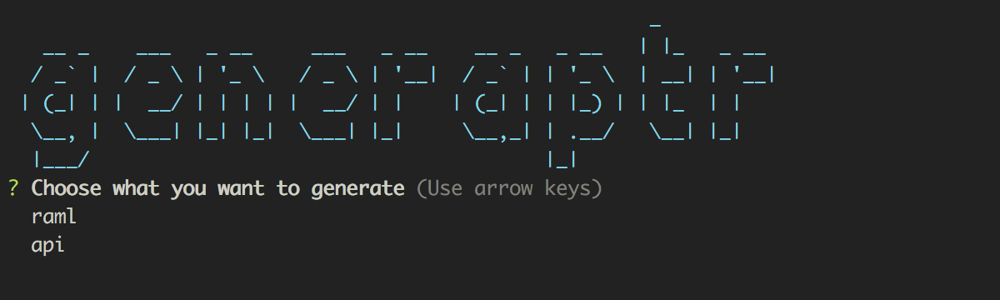
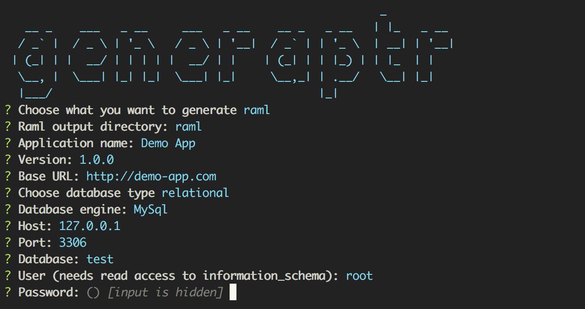
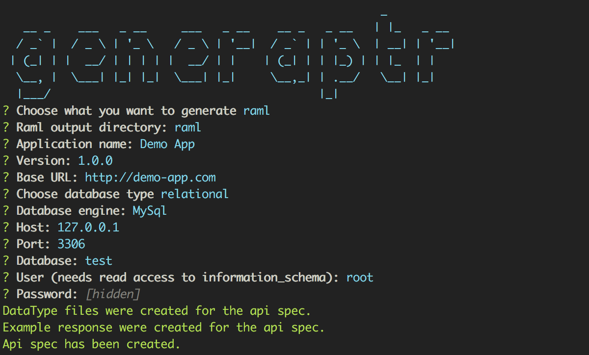
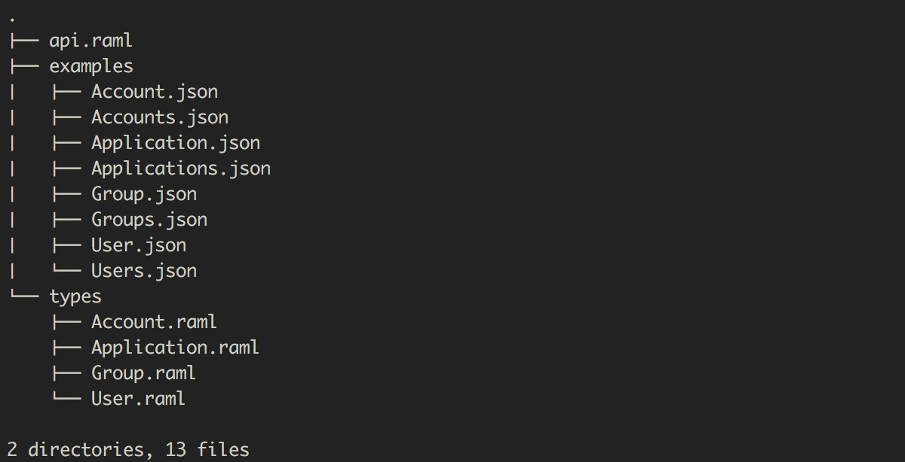
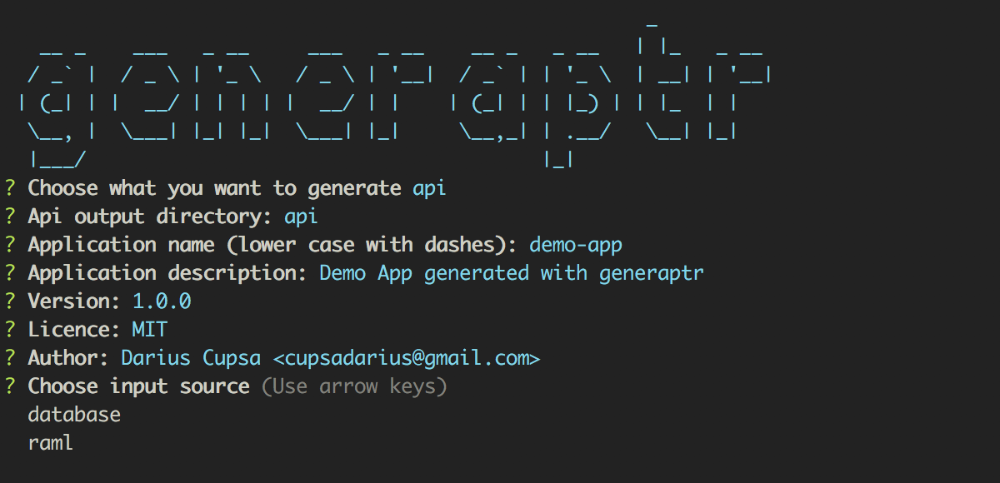
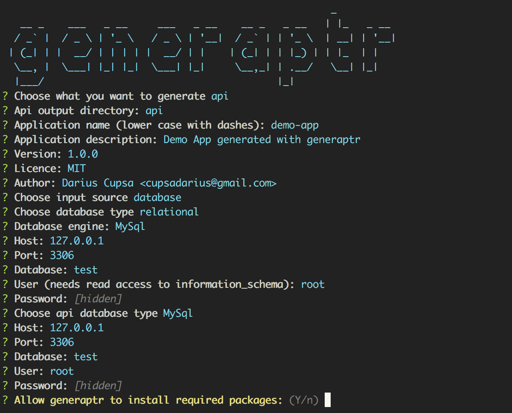
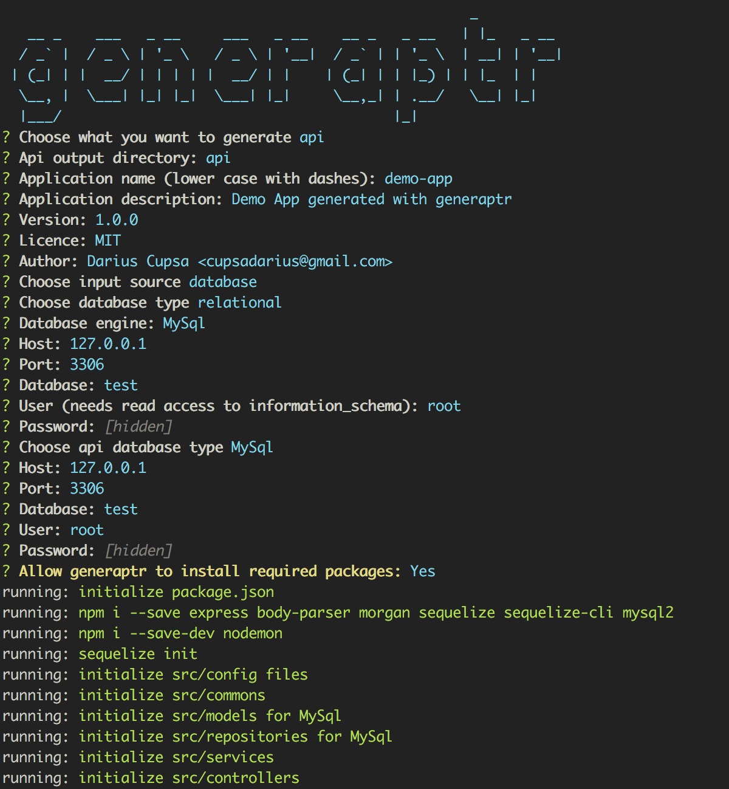
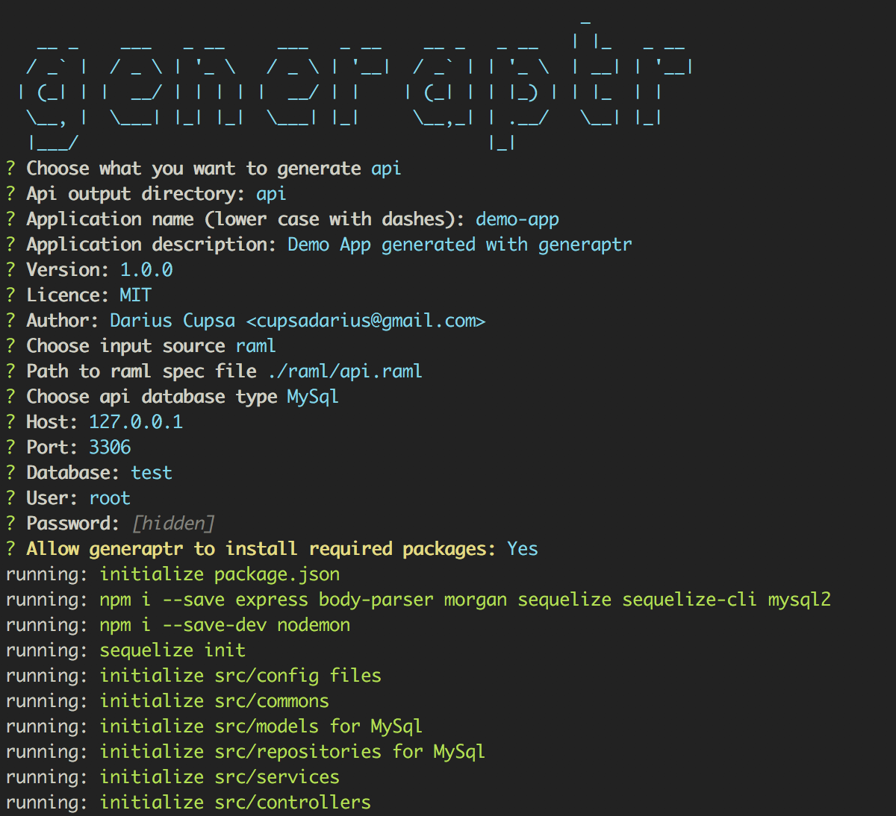
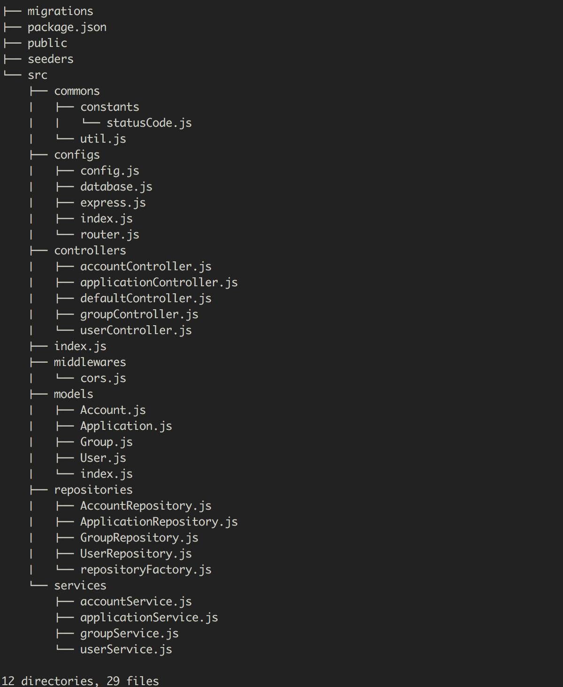

Generaptr is a node cli package that helps when starting up a project by generating boilerplate code for Express api.
Table of Contents
- Documentation
- Minimum Requirements
- Installation
- Examples
- Support
- Code of Conduct
- Contributing
- License
- References
Goal and Philosophy
Generaptr strives to be an easy and useful command line tool for generating boilerplate api for a given database structure.
Generaptr should ease the process of:
- starting a new backend project
- writing boilerplate crud operations
- writing api specs
Documentation
Minimum Requirements
The package was developed under node 7.5 so a minimum requirement would be:
node >= v7.5.0npm >= v3.10.10Installation
npm install generaptr
Examples
When starting generaptr the screen displayed below will appear.

Here, the two possible actions are shown, actions which will decide on which flow will the execution continue:
Required information for generating the raml api spec is presented in the next screen.


In the screenshot we can see the logs from a successful api spec generation.

Folder structure for a generated api spec.
Generate Api flow
While generating the api boilerplate a few things are required, things which will be made clear in the next screenshots.

In the screenshot above the user is prompted to choose the input source, right now we support a database connection or a valid raml spec (works best with raml spec's generated by generaptr).

In the screenshot above presents the database output choice, currently we only support MySql but more will come in the future.


In the last two screenshots we can see the logs from a successful api generation.

Following the same steps but with a different input source renders the same result.

Folder structure for a generated api boilerplate.
Support
You should expect mostly good support for the CLI below. This does not mean we won't look at issues found on other command line - feel free to report any!
- Mac OS:
- Terminal.app
- iTerm
- Windows:
- cmd.exe
- Powershell
- Cygwin
- Linux (Ubuntu, openSUSE, Arch Linux, etc):
- gnome-terminal (Terminal GNOME)
- konsole
Code of Conduct
See Code of Conduct for more information.
Contributing
Unit test
Unit test are written in Mocha and Assert. Please add a unit test for every new feature or bug fix. npm test to run the test suite.
Documentation
Add documentation for every API change. Feel free to send typo fixes and better docs!
License
Copyright (c) 2017 Darius Cupsa (twitter: @cupsadarius) Licensed under the MIT license.